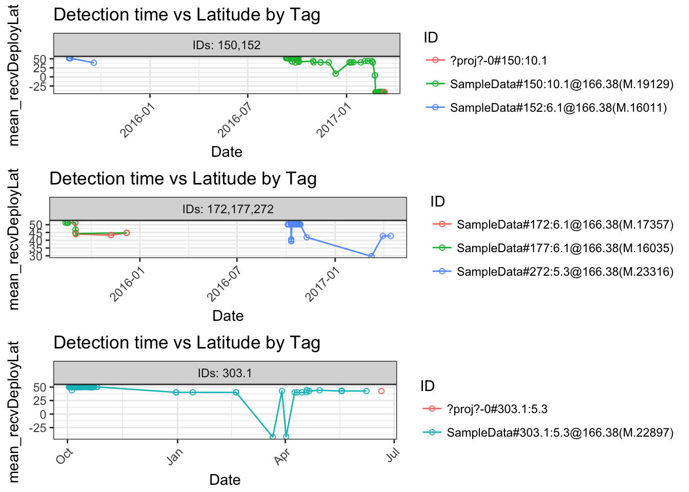
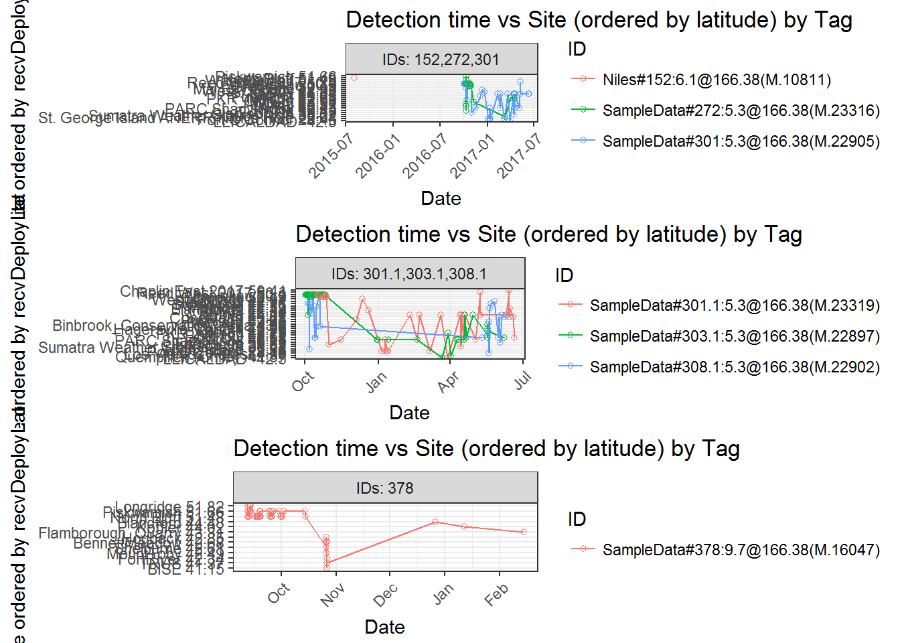
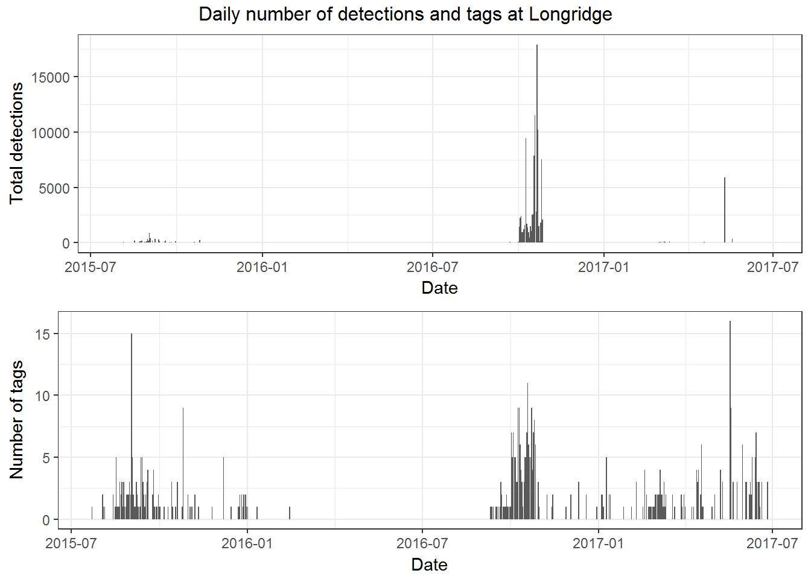
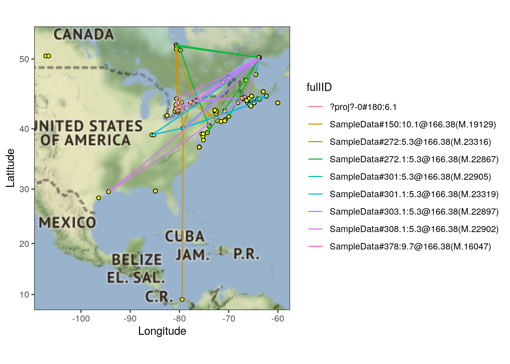
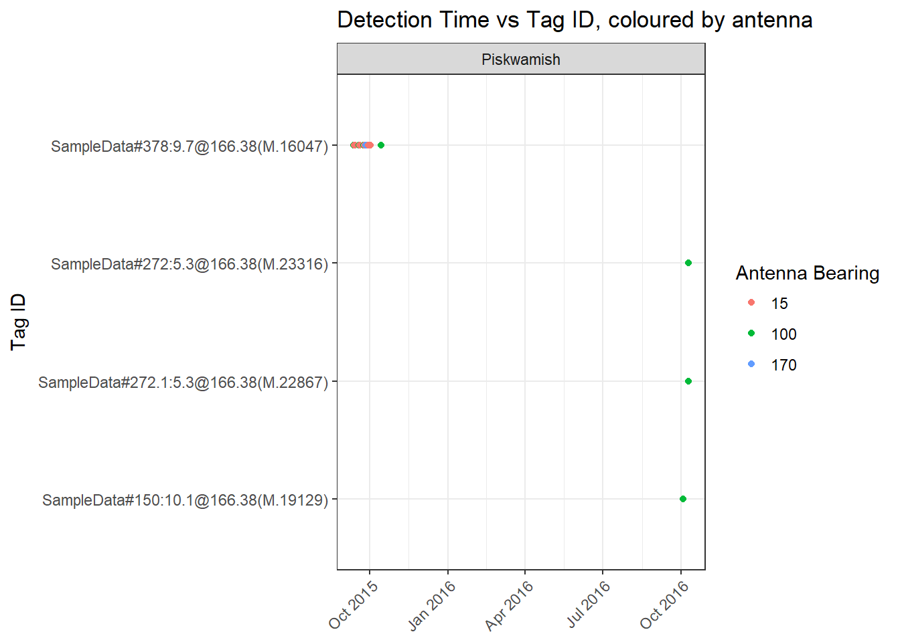
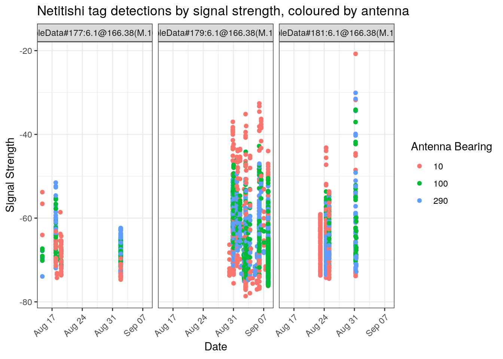
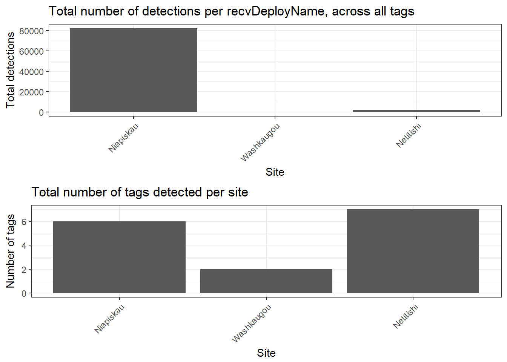

C Appendix - motus - Summary and plotting functions
The motus R package offers functions that work with .motus data to do common computations, summaries and plots. This appendix outlines these functions and provides examples on function use. Many of these functions work with both tbl and data.frame formats, however some require the data to be in sql format as specified below. Detailed instructions on accessing and formatting data are available in Chapter 3. The examples throughout this chapter work with the sample data which can be accessed and converted to various formats through the following code:
# download and access sample data in sql format
# username: motus.sample, password: motus.sample
sql.motus <- tagme(176, new = TRUE, update = TRUE, dir = "./data")
# extract "alltags"" table from sql file "sql.motus"
tbl.alltags <- tbl(sql.motus, "alltags")
## convert the tbl "tbl.alltags" to a data.frame called "df.alltags"
df.alltags <- tbl.alltags %>%
collect() %>%
as.data.frame()You can access the function help pages using `?sunRiseSet in the R console. Or view the underlying function code like this:
sunRiseSetC.1 checkVersion
C.1.1 Description
When you call the tagme() function to load the sqlite database, there is a process that will verify that your database has the version matching the most current version of the motus package and store the version in a new table called admInfo. Over time, changes will be made that require adding new tables, views or fields to the database. The following call will check that your database has been updated to the version matching the current version of the motus package. Refer to Appendix B if this call returns a warning; if you do not have the most recent version, see Chapter 2 to update motus.
C.1.2 Dependencies
sql.motus an sqlite database of .motus data downloaded using tagme()
C.1.3 Example
checkVersion(sql.motus)C.2 sunRiseSet
C.2.1 Description
Creates and adds a sunrise and sunset variable to a data.frame containing latitude, longitude, and a date/time as POSIXct or numeric.
C.2.2 Dependencies
data can be either a selected table from .motus detection data e.g. alltags, or a data.frame of detection data including at a minimum variables for date/time, latitude, and longitude
lat variable with latitude values, defaults to recvDeployLat
lon variable with longitude values, defaults to recvDeployLon
ts variable with time in UTC as numeric or POSIXct, defaults to ts
C.2.3 Example
Add sunrise/sunset variables to the alltags data.frame
alltags.df.sun <- sunRiseSet(df.alltags)
head(alltags.df.sun)## hitID runID batchID ts sig sigsd noise freq freqsd
## 1 45107 8886 53 2015-10-26 11:19:49 52 0 -96 4 0
## 2 45108 8886 53 2015-10-26 11:20:28 54 0 -96 4 0
## 3 45109 8886 53 2015-10-26 11:21:17 55 0 -96 4 0
## 4 45110 8886 53 2015-10-26 11:21:55 52 0 -96 4 0
## 5 45111 8886 53 2015-10-26 11:22:44 49 0 -96 4 0
## 6 199885 23305 64 2015-10-26 11:12:04 33 0 -96 4 0
## slop burstSlop done motusTagID ambigID port runLen bootnum tagProjID
## 1 1e-04 0.0000 1 16047 NA 3 5 11 176
## 2 1e-04 -0.0021 1 16047 NA 3 5 11 176
## 3 1e-04 0.0001 1 16047 NA 3 5 11 176
## 4 1e-04 -0.0010 1 16047 NA 3 5 11 176
## 5 1e-04 0.0001 1 16047 NA 3 5 11 176
## 6 1e-04 0.0000 1 16047 NA 1 11 4 176
## mfgID tagType codeSet mfg tagModel tagLifespan nomFreq tagBI pulseLen
## 1 378 ID Lotek4 Lotek NTQB-3-2 NA 166.38 9.6971 2.5
## 2 378 ID Lotek4 Lotek NTQB-3-2 NA 166.38 9.6971 2.5
## 3 378 ID Lotek4 Lotek NTQB-3-2 NA 166.38 9.6971 2.5
## 4 378 ID Lotek4 Lotek NTQB-3-2 NA 166.38 9.6971 2.5
## 5 378 ID Lotek4 Lotek NTQB-3-2 NA 166.38 9.6971 2.5
## 6 378 ID Lotek4 Lotek NTQB-3-2 NA 166.38 9.6971 2.5
## tagDeployID speciesID markerNumber markerType tagDeployStart
## 1 1839 4670 135268103 metal band 1441908000
## 2 1839 4670 135268103 metal band 1441908000
## 3 1839 4670 135268103 metal band 1441908000
## 4 1839 4670 135268103 metal band 1441908000
## 5 1839 4670 135268103 metal band 1441908000
## 6 1839 4670 135268103 metal band 1441908000
## tagDeployEnd tagDeployLat tagDeployLon tagDeployAlt
## 1 1457632800 51.4839 -80.45 NA
## 2 1457632800 51.4839 -80.45 NA
## 3 1457632800 51.4839 -80.45 NA
## 4 1457632800 51.4839 -80.45 NA
## 5 1457632800 51.4839 -80.45 NA
## 6 1457632800 51.4839 -80.45 NA
## tagDeployComments
## 1 {"ageID":"HY","bill":36.5,"blood":"Y","country":"Canada","culmen":36.5,"fatScore":3,"locationID":"NorthPoint_net","province":"Ontario","sexID":"U","tarsus":33.3,"weight":137.8,"wing":162,"comments":null}
## 2 {"ageID":"HY","bill":36.5,"blood":"Y","country":"Canada","culmen":36.5,"fatScore":3,"locationID":"NorthPoint_net","province":"Ontario","sexID":"U","tarsus":33.3,"weight":137.8,"wing":162,"comments":null}
## 3 {"ageID":"HY","bill":36.5,"blood":"Y","country":"Canada","culmen":36.5,"fatScore":3,"locationID":"NorthPoint_net","province":"Ontario","sexID":"U","tarsus":33.3,"weight":137.8,"wing":162,"comments":null}
## 4 {"ageID":"HY","bill":36.5,"blood":"Y","country":"Canada","culmen":36.5,"fatScore":3,"locationID":"NorthPoint_net","province":"Ontario","sexID":"U","tarsus":33.3,"weight":137.8,"wing":162,"comments":null}
## 5 {"ageID":"HY","bill":36.5,"blood":"Y","country":"Canada","culmen":36.5,"fatScore":3,"locationID":"NorthPoint_net","province":"Ontario","sexID":"U","tarsus":33.3,"weight":137.8,"wing":162,"comments":null}
## 6 {"ageID":"HY","bill":36.5,"blood":"Y","country":"Canada","culmen":36.5,"fatScore":3,"locationID":"NorthPoint_net","province":"Ontario","sexID":"U","tarsus":33.3,"weight":137.8,"wing":162,"comments":null}
## fullID deviceID recvDeployID recvDeployLat
## 1 SampleData#378:9.7@166.38(M.16047) 486 2510 42.60699
## 2 SampleData#378:9.7@166.38(M.16047) 486 2510 42.60699
## 3 SampleData#378:9.7@166.38(M.16047) 486 2510 42.60699
## 4 SampleData#378:9.7@166.38(M.16047) 486 2510 42.60699
## 5 SampleData#378:9.7@166.38(M.16047) 486 2510 42.60699
## 6 SampleData#378:9.7@166.38(M.16047) 515 2512 42.68067
## recvDeployLon recvDeployAlt recv recvDeployName recvSiteName
## 1 -72.71657 NA Lotek-159 Shelburne <NA>
## 2 -72.71657 NA Lotek-159 Shelburne <NA>
## 3 -72.71657 NA Lotek-159 Shelburne <NA>
## 4 -72.71657 NA Lotek-159 Shelburne <NA>
## 5 -72.71657 NA Lotek-159 Shelburne <NA>
## 6 -72.47392 NA Lotek-164 BennettMeadow <NA>
## isRecvMobile recvProjID antType antBearing antHeight speciesEN
## 1 0 74 yagi-9 127 NA Red Knot
## 2 0 74 yagi-9 127 NA Red Knot
## 3 0 74 yagi-9 127 NA Red Knot
## 4 0 74 yagi-9 127 NA Red Knot
## 5 0 74 yagi-9 127 NA Red Knot
## 6 0 74 yagi-9 243 NA Red Knot
## speciesFR speciesSci speciesGroup tagProjName
## 1 Bécasseau maubèche Calidris canutus BIRDS SampleData
## 2 Bécasseau maubèche Calidris canutus BIRDS SampleData
## 3 Bécasseau maubèche Calidris canutus BIRDS SampleData
## 4 Bécasseau maubèche Calidris canutus BIRDS SampleData
## 5 Bécasseau maubèche Calidris canutus BIRDS SampleData
## 6 Bécasseau maubèche Calidris canutus BIRDS SampleData
## recvProjName gpsLat gpsLon gpsAlt sunrise
## 1 <NA> NA NA NA 2015-10-26 11:16:49
## 2 <NA> NA NA NA 2015-10-26 11:16:49
## 3 <NA> NA NA NA 2015-10-26 11:16:49
## 4 <NA> NA NA NA 2015-10-26 11:16:49
## 5 <NA> NA NA NA 2015-10-26 11:16:49
## 6 <NA> NA NA NA 2015-10-26 11:15:58
## sunset
## 1 2015-10-26 21:52:11
## 2 2015-10-26 21:52:11
## 3 2015-10-26 21:52:11
## 4 2015-10-26 21:52:11
## 5 2015-10-26 21:52:11
## 6 2015-10-26 21:51:06C.3 plotAllTagsCoord
C.3.1 Description
Plot latitude/longitude vs time (UTC rounded to the hour) for each tag using .motus detection data. Coordinate is by default taken from a receivers GPS latitude recordings.
C.3.2 Dependencies
data a selected table from .motus detection data, e.g. alltags, or a data.frame of detection data including at a minimum variables for date/time, and either latitude or longitude
tagsPerPanel number of tags in each panel of the plot, by default this is 5
coordinate variable name from which to obtain location values, by default it is set to recvDeployLat
ts variable for a date/time object as numeric or POSIXct, defaults to ts
recvDepName variable consisting of receiver deployment name
fullID variable consisting of a tag fullID
mfgID variable consisting of a tags manufacturer ID
C.3.3 Example
Plot select tags from tbl.alltags with 3 tags per panel
plotAllTagsCoord(
filter(tbl.alltags, motusTagID %in% c(19129, 16011, 17357, 16035, 22897, 23316)),
tagsPerPanel = 3)
C.4 plotAllTagsSite
C.4.1 Description
Plot latitude/longitude vs time (UTC rounded to the hour) for each tag using .motus detection data. Coordinate is by default taken from a receivers GPS latitude recordings.
C.4.2 Dependencies
data a selected table from .motus detection data, e.g. alltags, or a data.frame of detection data including at a minimum variables for date/time, and either latitude or longitude
tagsPerPanel number of tags in each panel of the plot, by default this is 5
coordinate variable name from which to obtain location values, by default it is set to recvDeployLat
ts variable for a date/time object as numeric or POSIXct, defaults to ts
recvDepName variable consisting of receiver deployment name
fullID variable consisting of a tag fullID
mfgID variable consisting of a tags manufacturer ID
C.4.3 Example
Plot tbl file tbl.alltags using gpsLat and 3 tags per panel for select species Red Knot
plotAllTagsSite(filter(tbl.alltags, speciesEN == "Red Knot"),
coordinate = "recvDeployLat",
tagsPerPanel = 3)
C.5 plotDailySiteSum
C.5.1 Description
Plots total number of detections across all tags, and total number of tags detected per day for a specified site. Depends on siteSumDaily function.
C.5.2 Dependencies
data a selected table from .motus data, e.g. “alltags”, or a data.frame of detection data including at a minimum variables for motusTagID, sig, recvDepName, ts
motusTagID variable consisting of a motus tag ID
sig variable consisting a signal strength variable
recvDepName variable consisting of receiver deployment name
ts variable for a date/time object as numeric or POSIXct, defaults to ts
C.5.3 Example
Plot of all tag detections at site Longridge using data.frame df.alltags
plotDailySiteSum(df.alltags, recvDeployName = "Longridge")
C.6 plotRouteMap
C.6.1 Description
ggmap map of routes of Motus tag detections coloured by motusTagID. User defines a date range to show points for receivers that were operational at some point during specified date range. ### Dependencies data a .motus sql file
maptype map type to display, can be: “terrain” , “terrain-background”, “toner”, “watercolor”, etc. lat top and bottom latitude bounds. If NULL (default) this is calculated from the data lon left and right longitude bounds. If NULL (default) this is calculated from the data zoom integer for zoom 3-21, 3 being continent level, 10 being city-scale
recvStart start date for date range of active receivers
recvEnd end date for date range of active receivers
C.6.2 Example
Plot routemap of all detection data, with “terrain” maptype, and receivers active between 2016-01-01 and 2017-01-01
plotRouteMap(sql.motus,
maptype = "terrain",
recvStart = "2016-01-01", recvEnd = "2016-12-31")
C.7 plotSite
C.7.1 Description
C.7.2 Dependencies
data a selected table from .motus data, e.g. alltags, or a data.frame of detection data including at a minimum variables for ts, antBearing, fullID, recvDepName
ts variable for a date/time object as numeric or POSIXct, defaults to ts
antBearing variable consisting antenna bearing variable
fullID variable consisting of a tag fullID
recvDepName variable consisting of receiver deployment name
C.7.3 Example
Plot only detections at a specific site; Piskwamish for data.frame df.alltags
plotSite(filter(df.alltags, recvDeployName == "Piskwamish"))
C.8 plotSiteSig
C.8.1 Description
Plot signal strength vs time for all tags detected at a specified site, coloured by antenna
C.8.2 Dependencies
data a selected table from .motus data, e.g. alltags, or a data.frame of detection data including at a minimum variables for antBearing, ts, lat, sig, fullID, recvDepName
antBearing variable consisting antenna bearing variable
ts variable for a date/time object as numeric or POSIXct, defaults to ts
recvDeployLat variable consisting of receiver deployment latitude
sig variable consisting a signal strength variable
fullID variable consisting of a tag fullID
recvDepName variable consisting of receiver deployment name
C.8.3 Example
Plot select tags for site Piskwamish
plotSiteSig(filter(df.alltags, motusTagID %in% c(16037, 16039, 16035)),
recvDeployName = "Netitishi")
C.9 plotTagSig
C.9.1 Description
Plot signal strength vs time for specified tag, faceted by site (ordered by latitude) and coloured by antenna
C.9.2 Dependencies
data a selected table from .motus data, e.g. “alltags”, or a data.frame of detection data including at a minimum variables for motusTagID, sig, ts, antBearing, recvDeployLat, fullID, recvDepName
motusTagID variable consisting of a motus tag ID
antBearing variable consisting antenna bearing variable
ts variable for a date/time object as numeric or POSIXct, defaults to ts
recvDeployLat variable consisting of receiver deployment latitude
sig variable consisting a signal strength variable
fullID variable consisting of a tag fullID
recvDepName variable consisting of receiver deployment name
C.9.3 Example
Plot signal strength of a specified tag using tbl file tbl.alltags
plotTagSig(tbl.alltags, motusTagID = 16035)
C.10 simSiteDet
C.10.1 Description
Creates a data.frame consisting of only detections of tags that are detected at two or more receivers at the same time.
C.10.2 Dependencies
data a selected table from .motus data, e.g. alltags, or a data.frame of detection data including at a minimum variables for ts, motusTagID, recvDepName
ts variable for a date/time object as numeric or POSIXct, defaults to ts
motusTagID variable consisting of a motus tag ID
recvDepName variable consisting of receiver deployment name
C.10.3 Example
To get a data.frame called simSites of just simultaneous detections from a data.frame df.alltags
simSites <- simSiteDet(df.alltags)
head(simSites)## [1] motusTagID ts num.dup
## [4] hitID runID batchID
## [7] sig sigsd noise
## [10] freq freqsd slop
## [13] burstSlop done ambigID
## [16] port runLen bootnum
## [19] tagProjID mfgID tagType
## [22] codeSet mfg tagModel
## [25] tagLifespan nomFreq tagBI
## [28] pulseLen tagDeployID speciesID
## [31] markerNumber markerType tagDeployStart
## [34] tagDeployEnd tagDeployLat tagDeployLon
## [37] tagDeployAlt tagDeployComments fullID
## [40] deviceID recvDeployID recvDeployLat
## [43] recvDeployLon recvDeployAlt recv
## [46] recvDeployName recvSiteName isRecvMobile
## [49] recvProjID antType antBearing
## [52] antHeight speciesEN speciesFR
## [55] speciesSci speciesGroup tagProjName
## [58] recvProjName gpsLat gpsLon
## [61] gpsAlt
## <0 rows> (or 0-length row.names)C.11 siteSum
C.11.1 Description
Creates a summary of the first and last detection at a site, the length of time between first and last detection, the number of tags, and the total number of detections at a site. Plots total number of detections across all tags, and total number of tags detected at each site.
C.11.2 Dependencies
data a selected table from .motus data, e.g. alltags, or a data.frame of detection data including at a minimum variables for motusTagID, sig, recvDeployLat, recvDepName, and ts
motusTagID variable consisting of a motus tag ID
sig variable consisting a signal strength variable
recvDeployLat variable consisting of receiver deployment latitude
recvDepName variable consisting of receiver deployment name
ts variable for a date/time object as numeric or POSIXct, defaults to ts
units units to display time difference, defaults to “hours”, options include “secs”, “mins”, “hours”, “days”, “weeks”
C.11.3 Example
Create site summaries for select sites with time in minutes
site_summary <- siteSum(filter(df.alltags,
recvDeployName %in% c("Niapiskau", "Netitishi",
"Old Cur", "Washkaugou")),
units = "mins")
head(site_summary)## # A tibble: 3 x 6
## recvDeployName first_ts last_ts tot_ts num.tags
## <fct> <dttm> <dttm> <drtn> <int>
## 1 Niapiskau_50.~ 2016-10-01 23:47:57 2016-10-27 00:03:21 36015~ 6
## 2 Washkaugou_51~ 2016-10-09 23:52:45 2016-10-10 00:00:42 7~ 2
## 3 Netitishi_51.~ 2015-08-14 17:53:49 2015-09-08 01:10:13 34996~ 7
## # ... with 1 more variable: num.det <int>C.12 siteSumDaily
C.12.1 Description
Creates a summary of the first and last daily detection at a site, the length of time between first and last detection, the number of tags, and the total number of detections at a site for each day. Same as siteSum, but daily by site.
C.12.2 Dependencies
data a selected table from .motus data, e.g. alltags, or a data.frame of detection data including at a minimum variables for motusTagID, sig, recvDepName, ts
motusTagID variable consisting of a motus tag ID
sig variable consisting a signal strength variable
recvDepName variable consisting of receiver deployment name
ts variable for a date/time object as numeric or POSIXct, defaults to ts
units units to display time difference, defaults to “hours”, options include “secs”, “mins”, “hours”, “days”, “weeks”
C.12.3 Example
Create site summaries for all sites within detection data with time in minutes using tbl file tbl.alltags
daily_site_summary <- siteSumDaily(tbl.alltags, units = "mins")
head(daily_site_summary)## recvDeployName date first_ts
## 1 Assateague State Park\n38.2, -75.1 2015-09-13 2015-09-13 10:12:50
## 2 Baccaro\n43.5, -65.5 2017-05-19 2017-05-19 16:01:21
## 3 BennettMeadow\n42.7, -72.5 2015-10-26 2015-10-26 11:12:04
## 4 Binbrook_Conservation_Area\n43.1, -79.8 2017-05-18 2017-05-18 03:13:25
## 5 BISE\n41.2, -71.6 2015-10-26 2015-10-26 17:55:47
## 6 Blandford\n44.5, -64.1 2015-12-26 2015-12-26 14:58:27
## last_ts tot_ts num_tags num_det
## 1 2015-09-13 10:14:40 1.828847 mins 1 6
## 2 2017-05-19 16:02:40 1.323297 mins 3 6
## 3 2015-10-26 11:30:49 18.747692 mins 1 27
## 4 2017-05-18 03:13:46 0.353195 mins 2 6
## 5 2015-10-26 19:16:55 81.132212 mins 1 44
## 6 2015-12-26 14:58:47 0.323150 mins 1 2C.13 siteTrans
C.13.1 Description
Creates a data.frame of transitions between sites; detections are ordered by detection time, then “transitions” are identified as the period between the final detection at site x (possible “departure”), and the first detection (possible “arrival”) at site y (ordered chronologically). Each row contains the last detection time and lat/lon of site x, first detection time and lat/lon of site y, distance between the site pair, time between detections, rate of movement between detections, and bearing between site pairs.
C.13.2 Dependencies
data a selected table from .motus data, e.g. alltags, or a data.frame of detection data including at a minimum variables for ts, motusTagID, tagDeployID, recvDeployLat, recvDeployLon, recvDepName
ts variable for a date/time object as numeric or POSIXct, defaults to ts
motusTagID variable consisting of a motus tag ID
tagDeployID variable consisting of Motus tag deployment ID
recvDeployLat variable consisting of receiver deployment latitude
recvDeployLon variable consisting of receiver deployment longitude
recvDepName variable consisting of receiver deployment name
C.13.3 Example
View site transitions for only tag 16037 from data.frame df.alltags
transitions <- siteTrans(filter(df.alltags, motusTagID == 16037),
latCoord = "recvDeployLat", lonCoord = "recvDeployLon")
head(transitions)## # A tibble: 6 x 14
## motusTagID tagDeployID ts.x lat.x lon.x recvDeployName.x
## <int> <int> <dttm> <dbl> <dbl> <chr>
## 1 16037 1825 2015-08-17 17:02:39 NA NA NP mobile_NA, NA
## 2 16037 1825 2015-08-28 16:40:18 51.5 -80.4 North Bluff_51.~
## 3 16037 1825 2015-09-08 01:10:13 51.3 -80.1 Netitishi_51.3,~
## 4 16037 1825 2015-09-08 18:37:16 44.6 -65.8 Comeau (Marshal~
## 5 16037 1825 2015-09-13 19:46:27 39.0 -74.8 NWW_39, -74.8
## 6 16037 1825 2015-09-14 15:56:49 37.1 -76.0 BULL_37.1, -76
## # ... with 8 more variables: ts.y <dttm>, lat.y <dbl>, lon.y <dbl>,
## # recvDeployName.y <chr>, tot_ts <drtn>, dist <dbl>, rate <dbl>,
## # bearing <dbl>C.14 tagSum
C.14.1 Description
Creates a summary for each tag of it’s first and last detection time, first and last detection site, length of time between first and last detection, straight line distance between first and last detection site, rate of movement, and bearing
C.14.2 Dependencies
data a selected table from .motus data, e.g. alltags, or a data.frame of detection data including at a minimum variables for motusTagID, fullID, recvDeployLat, recvDeployLon, recvDepName, ts
motusTagID variable consisting of a motus tag ID
fullID variable consisting of a tag fullID
recvDeployLat variable consisting of receiver deployment latitude
recvDeployLon variable consisting of receiver deployment longitude
recvDepName variable consisting of receiver deployment name
ts variable for a date/time object as numeric or POSIXct, defaults to ts
C.14.3 Example
Create tag summary for all tags within detection data using tbl file tbl.alltags
tag_summary <- tagSum(tbl.alltags)
head(tag_summary)## fullID first_ts
## 1 Niles#152:6.1@166.38(M.10811) 2015-08-03 06:37:11
## 2 ?proj?-0#395:9.7 2015-07-23 10:10:54
## 3 Selva#172:6.1@166.38(M.17021) 2015-09-02 04:06:07
## 4 SampleData#152:6.1@166.38(M.16011) 2015-08-03 06:37:11
## 5 SampleData#395:9.7@166.38(M.16052) 2015-09-12 17:38:04
## 6 SampleData#179:6.1@166.38(M.16037) 2015-08-17 17:01:38
## last_ts first_site last_site
## 1 2015-08-03 06:37:35 North Bluff_51.5, -80.5 North Bluff_51.5, -80.5
## 2 2015-09-02 20:06:13 Machias_44.5, -67.1 Ruby's_62.9, -143.7
## 3 2015-09-03 00:27:16 Netitishi_51.3, -80.1 MDR_44, -68.1
## 4 2015-09-18 09:37:39 North Bluff_51.5, -80.5 NWW_39, -74.8
## 5 2015-10-20 20:43:43 Longridge_51.8, -80.7 Mount Thom_45.6, -63
## 6 2015-11-02 13:21:42 NP mobile_NA, NA Hillman_Marsh_42, -82.5
## recvLat.x recvLon.x recvLat.y recvLon.y tot_ts dist
## 1 51.4839 -80.4500 51.48390 -80.45000 24.386 secs 0
## 2 44.5023 -67.1018 62.89072 -143.68170 3578118.674 secs 5087724
## 3 51.2913 -80.1168 43.96893 -68.12830 73268.958 secs 1211577
## 4 51.4839 -80.4500 39.02827 -74.81004 3985228.228 secs 1452237
## 5 51.8231 -80.6912 45.55480 -62.98590 3294338.784 secs 1472844
## 6 NA NA 42.04270 -82.51440 6639604.044 secs NA
## rate bearing num_det
## 1 0.0000000 -180.00000 4
## 2 1.4218993 -38.36268 12
## 3 16.5360200 127.53144 279
## 4 0.3644051 160.20437 127
## 5 0.4470832 111.25011 147
## 6 NA NA 1353C.15 tagSumSite
C.15.1 Description
Creates a summary for each tag of it’s first and last detection time at each site, length of time between first and last detection of each site, and total number of detections at each site.
C.15.2 Dependencies
data a selected table from .motus data, e.g. “alltags”, or a data.frame of detection data including at a minimum variables for motusTagID, fullID, recvDepName, ts
motusTagID variable consisting of a motus tag ID
fullID variable consisting of a tag fullID
recvDepName variable consisting of receiver deployment name
ts variable for a date/time object as numeric or POSIXct, defaults to ts
C.15.3 Example
Create tag summaries for only select tags with time in default hours with data.frame df.alltags
tag_site_summary <- tagSumSite(filter(df.alltags,
motusTagID %in% c(16047, 16037, 16039)))
head(tag_site_summary)## fullID recvDeployName
## 1 SampleData#179:6.1@166.38(M.16037) BULL\n37.1, -76
## 2 SampleData#179:6.1@166.38(M.16037) Comeau (Marshalltown)\n44.6, -65.8
## 3 SampleData#179:6.1@166.38(M.16037) Hillman_Marsh\n42, -82.5
## 4 SampleData#179:6.1@166.38(M.16037) Netitishi\n51.3, -80.1
## 5 SampleData#179:6.1@166.38(M.16037) North Bluff\n51.5, -80.5
## 6 SampleData#179:6.1@166.38(M.16037) NP mobile\nNA, NA
## first_ts last_ts tot_ts num_det
## 1 2015-09-14 15:55:48 2015-09-14 15:56:49 0.01693000 hours 2
## 2 2015-09-08 18:29:57 2015-09-08 18:37:16 0.12192881 hours 6
## 3 2015-11-02 13:20:47 2015-11-02 13:21:42 0.01525056 hours 2
## 4 2015-08-30 01:36:08 2015-09-08 01:10:13 215.56819269 hours 1166
## 5 2015-08-23 15:13:57 2015-08-28 16:40:18 121.43902892 hours 26
## 6 2015-08-17 17:01:38 2015-08-17 17:02:39 0.01693344 hours 11C.16 timeToSunriset
C.16.1 Description
Creates and adds variables for time to, and time from sunrise/sunset based on a variable of POSIXct dates/times data.frame must contain latitude, longitude, and a date/time variable
C.16.2 Dependencies
data a selected table from .motus data, e.g. alltags, or a data.frame of detection data including at a minimum variables for date/time, latitude, and longitude
lat variable with latitude values, defaults to recvDeployLat
lon variable with longitude values, defaults to recvDeployLon
ts variable for a date/time object as numeric or POSIXct, defaults to ts
units units to display time difference, defaults to “hours”, options include “secs”, “mins”, “hours”, “days”, “weeks”
C.16.3 Example
Get sunrise and sunset information with units in minutes using tbl file tbl.alltags
sunrise <- timeToSunriset(tbl.alltags, units = "mins")
head(sunrise)## hitID runID batchID ts sig sigsd noise freq freqsd
## 1 45107 8886 53 2015-10-26 11:19:49 52 0 -96 4 0
## 2 45108 8886 53 2015-10-26 11:20:28 54 0 -96 4 0
## 3 45109 8886 53 2015-10-26 11:21:17 55 0 -96 4 0
## 4 45110 8886 53 2015-10-26 11:21:55 52 0 -96 4 0
## 5 45111 8886 53 2015-10-26 11:22:44 49 0 -96 4 0
## 6 199885 23305 64 2015-10-26 11:12:04 33 0 -96 4 0
## slop burstSlop done motusTagID ambigID port runLen bootnum tagProjID
## 1 1e-04 0.0000 1 16047 NA 3 5 11 176
## 2 1e-04 -0.0021 1 16047 NA 3 5 11 176
## 3 1e-04 0.0001 1 16047 NA 3 5 11 176
## 4 1e-04 -0.0010 1 16047 NA 3 5 11 176
## 5 1e-04 0.0001 1 16047 NA 3 5 11 176
## 6 1e-04 0.0000 1 16047 NA 1 11 4 176
## mfgID tagType codeSet mfg tagModel tagLifespan nomFreq tagBI pulseLen
## 1 378 ID Lotek4 Lotek NTQB-3-2 NA 166.38 9.6971 2.5
## 2 378 ID Lotek4 Lotek NTQB-3-2 NA 166.38 9.6971 2.5
## 3 378 ID Lotek4 Lotek NTQB-3-2 NA 166.38 9.6971 2.5
## 4 378 ID Lotek4 Lotek NTQB-3-2 NA 166.38 9.6971 2.5
## 5 378 ID Lotek4 Lotek NTQB-3-2 NA 166.38 9.6971 2.5
## 6 378 ID Lotek4 Lotek NTQB-3-2 NA 166.38 9.6971 2.5
## tagDeployID speciesID markerNumber markerType tagDeployStart
## 1 1839 4670 135268103 metal band 1441908000
## 2 1839 4670 135268103 metal band 1441908000
## 3 1839 4670 135268103 metal band 1441908000
## 4 1839 4670 135268103 metal band 1441908000
## 5 1839 4670 135268103 metal band 1441908000
## 6 1839 4670 135268103 metal band 1441908000
## tagDeployEnd tagDeployLat tagDeployLon tagDeployAlt
## 1 1457632800 51.4839 -80.45 NA
## 2 1457632800 51.4839 -80.45 NA
## 3 1457632800 51.4839 -80.45 NA
## 4 1457632800 51.4839 -80.45 NA
## 5 1457632800 51.4839 -80.45 NA
## 6 1457632800 51.4839 -80.45 NA
## tagDeployComments
## 1 {"ageID":"HY","bill":36.5,"blood":"Y","country":"Canada","culmen":36.5,"fatScore":3,"locationID":"NorthPoint_net","province":"Ontario","sexID":"U","tarsus":33.3,"weight":137.8,"wing":162,"comments":null}
## 2 {"ageID":"HY","bill":36.5,"blood":"Y","country":"Canada","culmen":36.5,"fatScore":3,"locationID":"NorthPoint_net","province":"Ontario","sexID":"U","tarsus":33.3,"weight":137.8,"wing":162,"comments":null}
## 3 {"ageID":"HY","bill":36.5,"blood":"Y","country":"Canada","culmen":36.5,"fatScore":3,"locationID":"NorthPoint_net","province":"Ontario","sexID":"U","tarsus":33.3,"weight":137.8,"wing":162,"comments":null}
## 4 {"ageID":"HY","bill":36.5,"blood":"Y","country":"Canada","culmen":36.5,"fatScore":3,"locationID":"NorthPoint_net","province":"Ontario","sexID":"U","tarsus":33.3,"weight":137.8,"wing":162,"comments":null}
## 5 {"ageID":"HY","bill":36.5,"blood":"Y","country":"Canada","culmen":36.5,"fatScore":3,"locationID":"NorthPoint_net","province":"Ontario","sexID":"U","tarsus":33.3,"weight":137.8,"wing":162,"comments":null}
## 6 {"ageID":"HY","bill":36.5,"blood":"Y","country":"Canada","culmen":36.5,"fatScore":3,"locationID":"NorthPoint_net","province":"Ontario","sexID":"U","tarsus":33.3,"weight":137.8,"wing":162,"comments":null}
## fullID deviceID recvDeployID recvDeployLat
## 1 SampleData#378:9.7@166.38(M.16047) 486 2510 42.60699
## 2 SampleData#378:9.7@166.38(M.16047) 486 2510 42.60699
## 3 SampleData#378:9.7@166.38(M.16047) 486 2510 42.60699
## 4 SampleData#378:9.7@166.38(M.16047) 486 2510 42.60699
## 5 SampleData#378:9.7@166.38(M.16047) 486 2510 42.60699
## 6 SampleData#378:9.7@166.38(M.16047) 515 2512 42.68067
## recvDeployLon recvDeployAlt recv recvDeployName recvSiteName
## 1 -72.71657 NA Lotek-159 Shelburne <NA>
## 2 -72.71657 NA Lotek-159 Shelburne <NA>
## 3 -72.71657 NA Lotek-159 Shelburne <NA>
## 4 -72.71657 NA Lotek-159 Shelburne <NA>
## 5 -72.71657 NA Lotek-159 Shelburne <NA>
## 6 -72.47392 NA Lotek-164 BennettMeadow <NA>
## isRecvMobile recvProjID antType antBearing antHeight speciesEN
## 1 0 74 yagi-9 127 NA Red Knot
## 2 0 74 yagi-9 127 NA Red Knot
## 3 0 74 yagi-9 127 NA Red Knot
## 4 0 74 yagi-9 127 NA Red Knot
## 5 0 74 yagi-9 127 NA Red Knot
## 6 0 74 yagi-9 243 NA Red Knot
## speciesFR speciesSci speciesGroup tagProjName
## 1 Bécasseau maubèche Calidris canutus BIRDS SampleData
## 2 Bécasseau maubèche Calidris canutus BIRDS SampleData
## 3 Bécasseau maubèche Calidris canutus BIRDS SampleData
## 4 Bécasseau maubèche Calidris canutus BIRDS SampleData
## 5 Bécasseau maubèche Calidris canutus BIRDS SampleData
## 6 Bécasseau maubèche Calidris canutus BIRDS SampleData
## recvProjName gpsLat gpsLon gpsAlt sunrise
## 1 <NA> NA NA NA 2015-10-26 11:16:49
## 2 <NA> NA NA NA 2015-10-26 11:16:49
## 3 <NA> NA NA NA 2015-10-26 11:16:49
## 4 <NA> NA NA NA 2015-10-26 11:16:49
## 5 <NA> NA NA NA 2015-10-26 11:16:49
## 6 <NA> NA NA NA 2015-10-26 11:15:58
## sunset ts_to_set ts_since_set ts_to_rise ts_since_rise
## 1 2015-10-26 21:52:11 632.3533 806.2056 1438.215974 3.013824
## 2 2015-10-26 21:52:11 631.7104 806.8485 1437.573097 3.656701
## 3 2015-10-26 21:52:11 630.9109 807.6480 1436.773577 4.456221
## 4 2015-10-26 21:52:11 630.2513 808.3076 1436.113997 5.115801
## 5 2015-10-26 21:52:11 629.4518 809.1071 1435.314477 5.915321
## 6 2015-10-26 21:51:06 639.0310 799.5242 3.896393 1437.332308